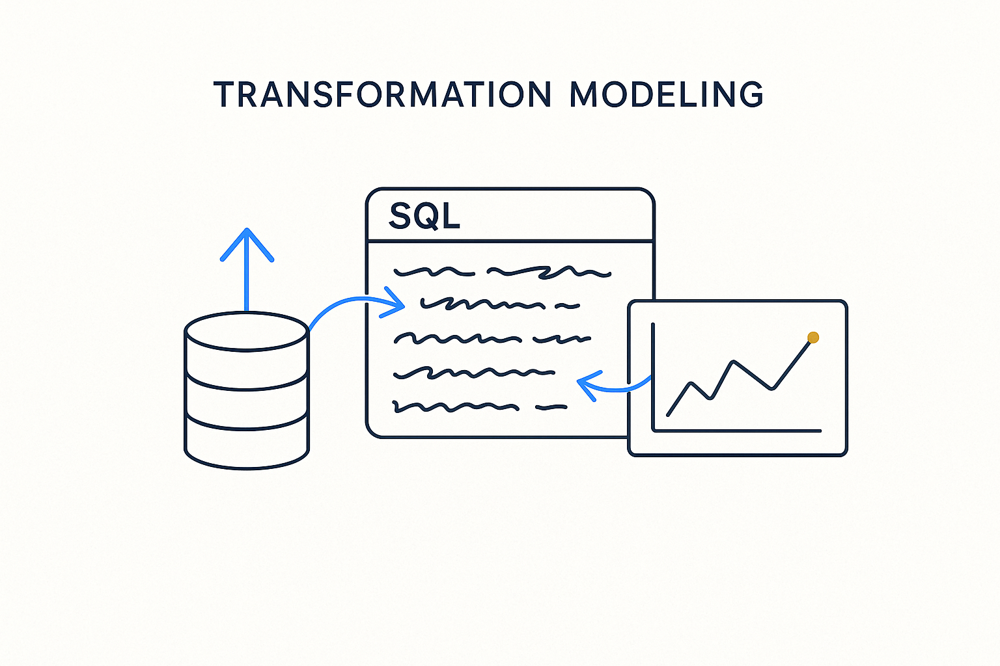

Movement — how data actually moves and changes. A separate world the tools never solved, where logic hides in complex, inconsistent SQL instead of being modeled.

> Movement — how data actually moves and changes. A separate world the tools never solved, where logic hides in complex, inconsistent SQL instead of being modeled.
Structure has a settled discipline; movement never did. How data actually moves and changes — the transformation — is the other half of modeling, and it is where the classic tools fell short. Data modeling tools drew boxes and lines for structure and then went quiet about the hardest part: the logic that turns sources into targets. So that logic ended up living where it always has — in code.
And the code shows the cost of never modeling it. Transformation is usually captured in complex SQL queries, and in practice they are messy in familiar ways: logic copied and pasted from one query to the next until no two agree; data-quality fixes tangled together with functional business logic in the same statement; time logic (bi-temporal, as-of, snapshots) done ad-hoc and differently everywhere; source-specific quirks hard-wired into the transformation; and no clear layering, so staging, cleansing, integration and business rules all blur into one long, unmaintainable query. Change one thing and you can’t tell what breaks, because the intent was never modeled — only the SQL was written.
Breakthrough Modeling treats transformation as something to model, not just to code. The mapping, the filters, the joins, the time policy, the rules — each becomes explicit, layered metadata, and the SQL is *generated* from it deterministically rather than hand-written and copied. That is what closes the gap the tools left open: movement modeled with the same rigor as structure, so the logic is consistent, layered, traceable, and no longer hiding in a thousand bespoke queries.
Where it lives: the signature principle of Breakthrough Modeling — movement modeled, not buried in SQL.